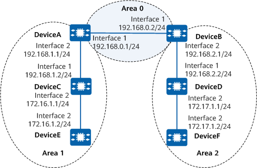

Example for Configuring Basic OSPF Functions
Networking Requirements
On the network shown in Figure 1, all devices run OSPF, and the entire AS is divided into three areas. DeviceA and DeviceB function as ABRs to forward inter-area routes.
After the configuration is complete, each device should learn the routes to all network segments in the AS.

In this example, interface 1 and interface 2 represent 10GE0/0/1 and 10GE0/0/2, respectively.

Device |
Router ID |
Process ID |
IP Address |
|---|---|---|---|
DeviceA |
1.1.1.1 |
1 |
Area 0: 192.168.0.0/24 Area 1: 192.168.1.0/24 |
DeviceB |
2.2.2.2 |
1 |
Area 0: 192.168.0.0/24 Area 2: 192.168.2.0/24 |
DeviceC |
3.3.3.3 |
1 |
Area 1: 192.168.1.0/24 and 172.16.1.0/24 |
DeviceD |
4.4.4.4 |
1 |
Area 2: 192.168.2.0/24 and 172.17.1.0/24 |
DeviceE |
5.5.5.5 |
1 |
Area 1: 172.16.1.0/24 |
DeviceF |
6.6.6.6 |
1 |
Area 2: 172.17.1.0/24 |
Precautions
During the configuration, note the following:
The backbone area is responsible for forwarding inter-area routes. In addition, the routing information between non-backbone areas must be forwarded through the backbone area. OSPF defines the following rules for the backbone area:
- Connectivity must be available between non-backbone areas and the backbone area.
- Connectivity must be available over the backbone area.
- The intervals at which Hello, Dead, and Poll packets are sent on the local interface must be the same as those intervals on the remote interface. Otherwise, the OSPF neighbor relationship cannot be established.
Procedure
- Assign an IP address to each interface. For detailed configurations, see Configuration Scripts.
# Configure DeviceA.
<HUAWEI> system-view [HUAWEI] sysname DeviceA [DeviceA] interface 10ge 0/0/1 [DeviceA-10GE0/0/1] undo portswitch [DeviceA-10GE0/0/1] ip address 192.168.0.1 24 [DeviceA-10GE0/0/1] quit [DeviceA] interface 10ge 0/0/2 [DeviceA-10GE0/0/2] undo portswitch [DeviceA-10GE0/0/2] ip address 192.168.1.1 24 [DeviceA-10GE0/0/2] quit
The configurations of other devices are similar to the configuration of DeviceA. For detailed configurations, see Configuration Scripts.
- Configure basic OSPF functions.
# Configure DeviceA.
[DeviceA] router id 1.1.1.1 [DeviceA] ospf 1 [DeviceA-ospf-1] area 0 [DeviceA-ospf-1-area-0.0.0.0] network 192.168.0.0 0.0.0.255 [DeviceA-ospf-1-area-0.0.0.0] quit [DeviceA-ospf-1] area 1 [DeviceA-ospf-1-area-0.0.0.1] network 192.168.1.0 0.0.0.255 [DeviceA-ospf-1-area-0.0.0.1] quit [DeviceA-ospf-1] quit
# Configure DeviceB.
[DeviceB] router id 2.2.2.2 [DeviceB] ospf 1 [DeviceB-ospf-1] area 0 [DeviceB-ospf-1-area-0.0.0.0] network 192.168.0.0 0.0.0.255 [DeviceB-ospf-1-area-0.0.0.0] quit [DeviceB-ospf-1] area 2 [DeviceB-ospf-1-area-0.0.0.2] network 192.168.2.0 0.0.0.255 [DeviceB-ospf-1-area-0.0.0.2] quit [DeviceB-ospf-1] quit
# Configure DeviceC.
[DeviceC] router id 3.3.3.3 [DeviceC] ospf 1 [DeviceC-ospf-1] area 1 [DeviceC-ospf-1-area-0.0.0.1] network 192.168.1.0 0.0.0.255 [DeviceC-ospf-1-area-0.0.0.1] network 172.16.1.0 0.0.0.255 [DeviceC-ospf-1-area-0.0.0.1] quit [DeviceC-ospf-1] quit
# Configure DeviceD.
[DeviceD] router id 4.4.4.4 [DeviceD] ospf 1 [DeviceD-ospf-1] area 2 [DeviceD-ospf-1-area-0.0.0.2] network 192.168.2.0 0.0.0.255 [DeviceD-ospf-1-area-0.0.0.2] network 172.17.1.0 0.0.0.255 [DeviceD-ospf-1-area-0.0.0.2] quit [DeviceD-ospf-1] quit
# Configure DeviceE.
[DeviceE] router id 5.5.5.5 [DeviceE] ospf 1 [DeviceE-ospf-1] area 1 [DeviceE-ospf-1-area-0.0.0.1] network 172.16.1.0 0.0.0.255 [DeviceE-ospf-1-area-0.0.0.1] quit [DeviceE-ospf-1] quit
# Configure DeviceF.
[DeviceF] router id 6.6.6.6 [DeviceF] ospf 1 [DeviceF-ospf-1] area 2 [DeviceF-ospf-1-area-0.0.0.2] network 172.17.1.0 0.0.0.255 [DeviceF-ospf-1-area-0.0.0.2] quit [DeviceF-ospf-1] quit
- Configure ciphertext authentication mode for the OSPF area.
# Configure DeviceA.
[DeviceA] ospf 1 [DeviceA-ospf-1] area 0 [DeviceA-ospf-1-area-0.0.0.0] authentication-mode hmac-sha256 1 cipher YsHsjx_202206 [DeviceA-ospf-1-area-0.0.0.0] quit [DeviceA-ospf-1] quit
# Configure DeviceB.
[DeviceB] ospf 1 [DeviceB-ospf-1] area 0 [DeviceB-ospf-1-area-0.0.0.0] authentication-mode hmac-sha256 1 cipher YsHsjx_202206 [DeviceB-ospf-1-area-0.0.0.0] quit [DeviceB-ospf-1] quit
Device B and Device A must be configured with the same password. Otherwise, the neighbor relationship cannot be established.
Verifying the Configuration
# Check OSPF neighbor information on DeviceA.
[DeviceA] display ospf peer OSPF Process 1 with Router ID 1.1.1.1 Area 0.0.0.0 interface 192.168.0.1(10GE0/0/1)'s neighbors Router ID: 2.2.2.2 Address: 192.168.0.2 State : Full Mode : Nbr is Master Priority: 1 DR : 192.168.0.2 BDR : 192.168.0.1 MTU : 0 Dead timer due (in seconds) : 32 Retrans timer interval : 5 Neighbor up time : 00h04m14s Neighbor up time stamp : 2020-06-08 01:41:57 Authentication Sequence : 0 Area 0.0.0.1 interface 192.168.1.1(10GE0/0/2)'s neighbors Router ID: 3.3.3.3 Address: 192.168.1.2 State : Full Mode : Nbr is Master Priority: 1 DR : 192.168.1.2 BDR : 192.168.1.1 MTU : 0 Dead timer due (in seconds) : 32 Retrans timer interval : 5 Neighbor up time : 00h04m14s Neighbor up time stamp : 2020-06-08 01:41:57 Authentication Sequence : 0
# Check information about the OSPF routes on DeviceA.
[DeviceA] display ospf routing OSPF Process 1 with Router ID 1.1.1.1 Routing for Network ------------------------------------------------------------------------------ Destination Cost Type NextHop AdvRouter Area 172.16.1.0/24 2 Transit 192.168.1.2 3.3.3.3 0.0.0.1 172.17.1.0/24 3 Inter-area 192.168.0.2 2.2.2.2 0.0.0.0 192.168.2.0/24 2 Inter-area 192.168.0.2 2.2.2.2 0.0.0.0 Total Nets: 3 Intra Area: 1 Inter Area: 2 ASE: 0 NSSA: 0
# Check the LSDB of DeviceA.
[DeviceA] display ospf lsdb
OSPF Process 1 with Router ID 1.1.1.1
Link State Database
Area: 0.0.0.0
Type LinkState ID AdvRouter Age Len Sequence Metric
Router 1.1.1.1 1.1.1.1 93 48 80000004 1
Router 2.2.2.2 2.2.2.2 92 48 80000004 1
Sum-Net 172.16.1.0 1.1.1.1 1287 28 80000002 2
Sum-Net 192.168.1.0 1.1.1.1 1716 28 80000001 1
Sum-Net 172.17.1.0 2.2.2.2 1336 28 80000001 2
Sum-Net 192.168.2.0 2.2.2.2 87 28 80000002 1
Area: 0.0.0.1
Type LinkState ID AdvRouter Age Len Sequence Metric
Router 1.1.1.1 1.1.1.1 1420 48 80000002 1
Router 3.3.3.3 3.3.3.3 1294 60 80000003 1
Router 5.5.5.5 5.5.5.5 1296 36 80000002 1
Network 172.16.1.1 3.3.3.3 1294 32 80000001 0
Sum-Net 172.17.1.0 1.1.1.1 1325 28 80000001 3
Sum-Net 192.168.0.0 1.1.1.1 1717 28 80000001 1
Sum-Net 192.168.2.0 1.1.1.1 1717 28 80000001 2
# Check the routing table of DeviceD.
[DeviceD] display ospf routing OSPF Process 1 with Router ID 1.1.1.1 Routing for Network ------------------------------------------------------------------------------ Destination Cost Type NextHop AdvRouter Area 172.16.1.0/24 4 Inter-area 192.168.2.1 2.2.2.2 0.0.0.2 192.168.0.0/24 2 Inter-area 192.168.2.1 2.2.2.2 0.0.0.2 192.168.1.0/24 3 Inter-area 192.168.2.1 2.2.2.2 0.0.0.2 Total Nets: 3 Intra Area: 0 Inter Area: 3 ASE: 0 NSSA: 0
Configuration Scripts
-
# sysname DeviceA # router id 1.1.1.1 # interface 10GE0/0/1 ip address 192.168.0.1 255.255.255.0 # interface 10GE0/0/2 ip address 192.168.1.1 255.255.255.0 # ospf 1 area 0.0.0.0 network 192.168.0.0 0.0.0.255 authentication-mode hmac-sha256 1 cipher %^%#c;\wJ4Qi8I1FMGM}KmIK9rha/.D.!$"~0(Ep66z~%^%# area 0.0.0.1 network 192.168.1.0 0.0.0.255 # return
-
# sysname DeviceB # router id 2.2.2.2 # interface 10GE0/0/1 ip address 192.168.0.2 255.255.255.0 # interface 10GE0/0/2 ip address 192.168.2.1 255.255.255.0 # ospf 1 area 0.0.0.0 network 192.168.0.0 0.0.0.255 authentication-mode hmac-sha256 1 cipher %^%#c;\wJ4Qi8I1FMGM}KmIK9rha/.D.!$"~0(Ep66z~%^%# area 0.0.0.2 network 192.168.2.0 0.0.0.255 # return
-
# sysname DeviceC # router id 3.3.3.3 # interface 10GE0/0/1 ip address 192.168.1.2 255.255.255.0 # interface 10GE0/0/2 ip address 172.16.1.1 255.255.255.0 # ospf 1 area 0.0.0.1 network 192.168.1.0 0.0.0.255 network 172.16.1.0 0.0.0.255 # return
-
# sysname DeviceD # router id 4.4.4.4 # interface 10GE0/0/1 ip address 192.168.2.2 255.255.255.0 # interface 10GE0/0/2 ip address 172.17.1.1 255.255.255.0 # ospf 1 area 0.0.0.2 network 192.168.2.0 0.0.0.255 network 172.17.1.0 0.0.0.255 # return
-
# sysname DeviceE # router id 5.5.5.5 # interface 10GE0/0/2 ip address 172.16.1.2 255.255.255.0 # ospf 1 area 0.0.0.1 network 172.16.1.0 0.0.0.255 # return
-
# sysname DeviceF # router id 6.6.6.6 # interface 10GE0/0/2 ip address 172.17.1.2 255.255.255.0 # ospf 1 area 0.0.0.2 network 172.17.1.0 0.0.0.255 # return